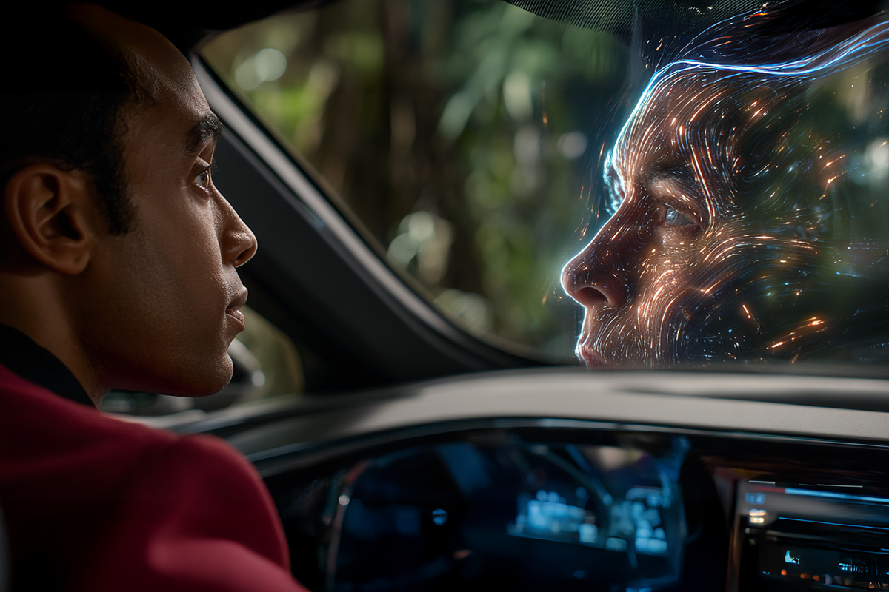
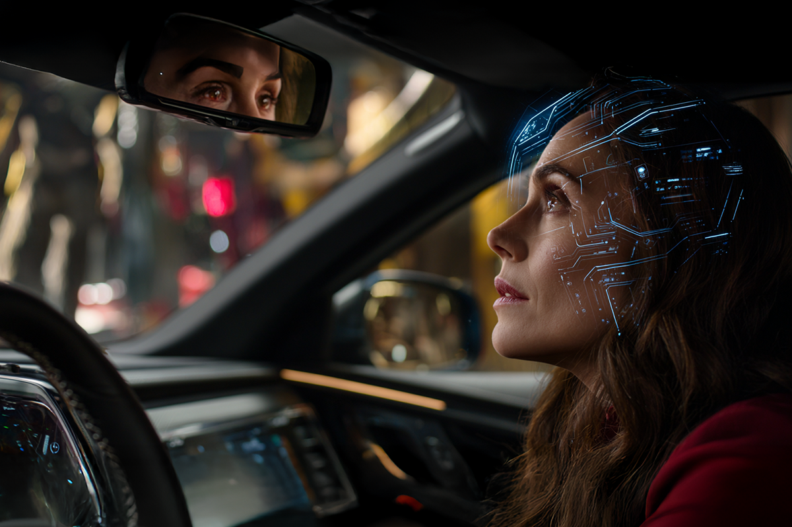
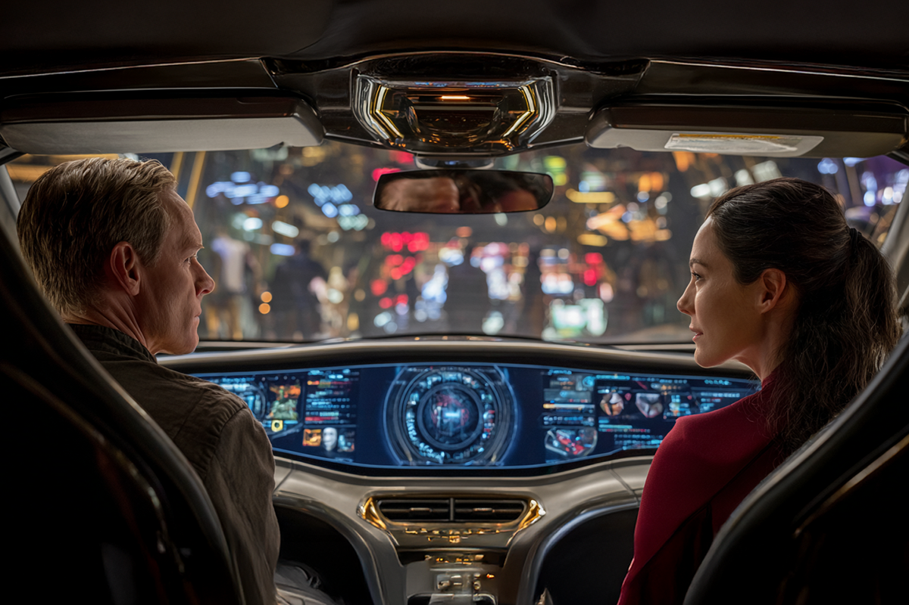

Cuando tu auto te responde
Así habla hoy la inteligencia artificial.
Así habla hoy la inteligencia artificial.

Hasta ahora el copiloto es tu amigo o familiar que te grita “¡dobla a la derecha ahora!”, mientras ve alguna app de movilidad. Pero ahora, esa voz viene integrada a los autos más novedosos y gracias a la Inteligencia Artificial.
Porque la IA ya no vive solo en tu celular: se subió al auto también. Por ejemplo, marcas como Mercedes-Benz y BMW integraron asistentes conversacionales que no solo te dedican el camino, sino que entienden lo que dices, cómo lo dices y hasta tu estado de ánimo. ¿Cómo? En el caso de Mercedes-Benz, su asistente funciona con tecnología de Google Cloud y ChatGPT, por lo que es capaz de mantener conversaciones naturales y adaptarse a tus hábitos.

“Mmm, parece que estás estresado. ¿Te tinca poner tu playlist relajante?”.
Sí, eso podría decirte tu auto dentro de poco…
Los nuevos sistemas de IA monitorean el tono de voz, los movimientos del volante y el historial de conducción para ofrecerte una experiencia cada vez más “humana”. Aunque la línea entre lo útil y lo invasivo es bastante delgada.
Lo que antes era solo conducción, hoy es una relación entre datos, algoritmos y emociones. Y aunque muchos lo amamos -porque quien no quisiera un copiloto amable-, también implica que nuestros autos saben más de nosotros que nunca.

Sensores, cámaras, micrófonos… todo eso recopila información. Y no es poca.
Según Reuters, la Unión Europea está preparando leyes para que los fabricantes de autos conectados deban compartir los datos del vehículo con talleres y aseguradoras, en busca de mayor transparencia.
En otras palabras, mientras más “inteligente” es tu auto, más sabe de ti. Tu velocidad promedio, tus horarios, tus rutas favoritas e incluso con quién hablas por Bluetooth.
Y aunque esa información ayuda a mejorar la conducción, también abre preguntas: ¿Dónde se guarda? ¿Quién la usa? ¿Podría afectar el precio del seguro si manejas “demasiado rápido”?

Para nuestra generación, el auto ya no es solo un medio de transporte: es una extensión de nuestro estilo de vida digital.
Nos gusta que tenga cámara, conectividad, pantalla táctil y apps. Pero también queremos que nos cuide. Porque en el fondo, la IA no reemplaza la independencia de conducir: la complementa.
Y sí, se siente cool cuando el auto te responde, te guía y hasta te entiende. Pero cuando llega algún choque inesperado, la IA no puede salvarte sola.
En ComparaOnline creemos que la tecnología puede simplificarte la vida, por eso la usamos para darte las mejores opciones de seguro. Tú solo debes ocuparte de elegir la que más te convenga.
Aquí, la IA te ayuda a ahorrar.
Porque aunque el futuro venga con asistentes inteligentes, la mejor decisión sigue siendo protegerte tú mismo.
 Tecnología
TecnologíaSi eres como yo y revisas TikTok e Instagram constantemente, te habrás dado cuenta de que estas redes son casi como un experimento social.
 Tecnología
TecnologíaHablamos mucho de inteligencia artificial. La tenemos integrada en nuestra vida, nos ayuda en nuestros trabajos y le preguntamos cosas de…
 Tecnología
TecnologíaDurante años hemos pensado en la inteligencia artificial como algo súper frío: servidores gigantes, computadores procesando datos y…